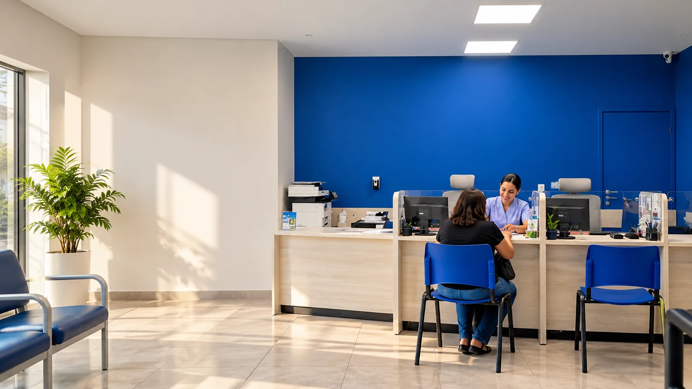
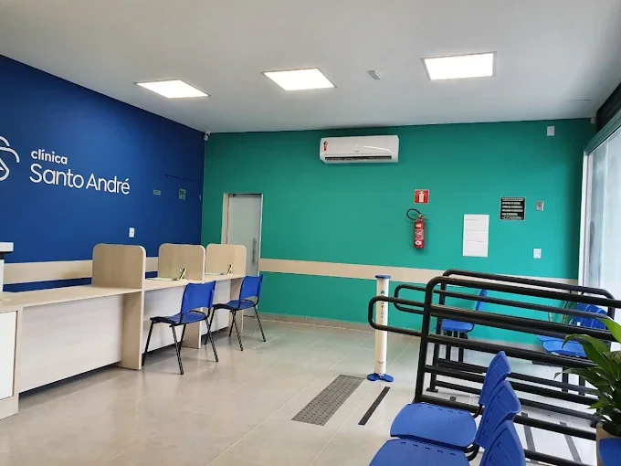
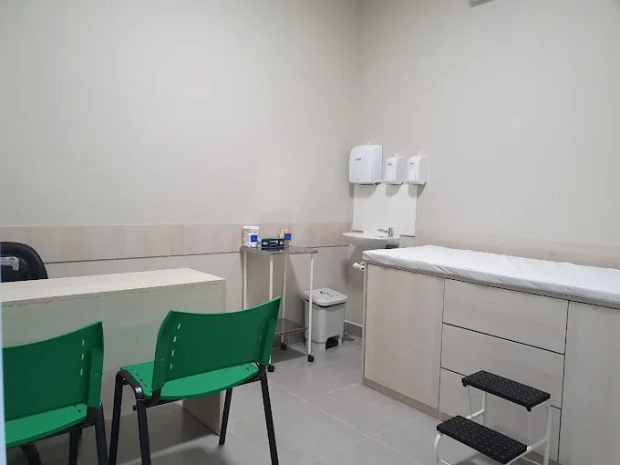
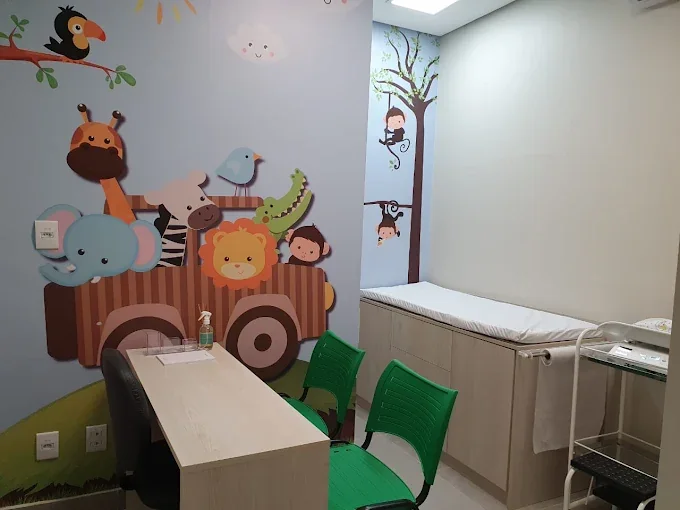

“Bons equipamentos, responde WhatsApp rápido, recepção com pessoas atenciosas.”

Rua Mariana, 1150 – Bonfim, BH
Do pediatra ao geriatra,
no mesmo endereço do Bonfim
Pediatria, ginecologia, cardiologia, geriatria e mais 11 áreas com hora marcada na Clínica Santo André. Agende pelo WhatsApp e consulte pelo Amagis Saúde, Santo André Planos ou particular.
- 5,0em 68 opiniões no Doctoralia
- Seg a sex, 7h30 às 18h
- Convênio ou particular
Escolha a especialidade e agende direto
Escolha a área e fale direto com a recepção. A mensagem já vai com a especialidade escrita.
Não achou o que procura? Pergunte pelo WhatsApp.
O que os pacientes contam
“Gosto de fazer praticamente todas as minhas consultas aqui.”
Nota média em 68 opiniões de pacientes no Doctoralia.
Ver opiniões no DoctoraliaCuidado de perto, do agendamento ao retorno
Mais do que consultas, a Clínica Santo André constrói relações de confiança. O ambiente foi pensado para que cada paciente se sinta ouvido e bem recebido.
Hora marcada
Você agenda pelo WhatsApp e é atendido no horário combinado, sem precisar chegar cedo para pegar senha.
Recepção que responde rápido
Agendamento e dúvidas pelo WhatsApp, com uma recepção atenta do primeiro contato ao retorno.
Equipe que trabalha junto
Profissionais de diferentes áreas no mesmo endereço facilitam encaminhamentos e o acompanhamento de cada paciente.
Atendimento humanizado
Acolhimento, respeito e atenção às necessidades físicas, emocionais e preventivas de cada pessoa.
Conheça a clínica antes de chegar
Recepção ampla e climatizada, consultórios organizados e uma sala preparada para receber as crianças.



Como marcar sua primeira consulta
Chame no WhatsApp
Diga qual especialidade você procura e se vai pelo convênio ou particular.
Escolha o horário
A recepção mostra os dias livres e confirma a cobertura do seu plano.
Separe os documentos
Documento com foto, carteirinha do convênio e exames anteriores, se tiver.
Venha no horário marcado
Rua Mariana, 1150, no Bonfim. Chegue uns 10 minutos antes para o cadastro.
Atendimento pelo seu plano ou particular
A recepção confirma a cobertura da especialidade antes de marcar, para você não ter surpresa no dia.
Confirmar meu convênioAmagis Saúde
Convênio atendidoSanto André Planos de Assistência Médica
Convênio atendidoParticular
Valores e formas de pagamento pelo WhatsApp
Sobre a Clínica Santo André
Somos um centro de saúde e bem-estar no Bonfim, em Belo Horizonte, dedicado a um atendimento humanizado, ético e próximo.
Nossa equipe reúne profissionais de várias especialidades trabalhando de forma integrada para cuidar de crianças, adultos e idosos. Cada pessoa é única, e por isso o cuidado também é individual: da recepção ao retorno, a ideia é que você se sinta ouvido, respeitado e seguro.
Nossa missão
Promover saúde, bem-estar e qualidade de vida com atendimento humanizado, ético e de excelência, colocando o paciente no centro de tudo.
- Humanização e acolhimento
- Ética e transparência
- Respeito à individualidade
- Empatia e cuidado
- Trabalho em equipe
- Melhoria contínua
Perguntas frequentes
Não encontrou sua dúvida? A recepção responde pelo WhatsApp.
Quais especialidades a Clínica Santo André atende?
São 15 áreas: ginecologia e obstetrícia, pediatria, psicopedagogia, clínico geral, cardiologia, angiologia, geriatria, endocrinologia e metabologia, neurologia, ortopedia e traumatologia, dermatologia, oftalmologia, psicologia, psiquiatria e nutrição. A clínica também faz ultrassonografia.
A clínica aceita convênio?
Sim: Amagis Saúde e Santo André Planos de Assistência Médica. A cobertura de cada especialidade é confirmada no agendamento pelo WhatsApp (31) 3564-8900.
Dá para consultar particular?
Sim. Quem não tem um dos convênios atendidos pode agendar consulta particular. Valores e formas de pagamento são informados pelo WhatsApp.
Precisa agendar ou atende por ordem de chegada?
O atendimento é com hora marcada. Agende pelo WhatsApp ou telefone (31) 3564-8900.
Qual o horário de funcionamento?
De segunda a sexta-feira, das 7h30 às 18h.
Onde fica a clínica?
Na Rua Mariana, 1150, bairro Bonfim, Belo Horizonte (MG), CEP 31210-420, na região Noroeste, perto da Lagoinha, do Carlos Prates e do bairro Santo André.
A clínica atende crianças?
Sim. Tem pediatria e psicopedagogia, com um consultório pediátrico preparado para receber os pequenos.
A clínica faz ultrassom?
Sim, com hora marcada. Os tipos de ultrassom disponíveis são informados no agendamento.
O que levar na primeira consulta?
Documento com foto, carteirinha do convênio (se for pelo plano), pedido médico quando houver e exames anteriores relacionados à consulta.
Como chegar
Clínica Santo André
- Rua Mariana, 1150 – BonfimBelo Horizonte – MG · CEP 31210-420
- Segunda a sexta, 7h30 às 18hAtendimento com hora marcada
- (31) 3564-8900Telefone e WhatsApp
Rua Mariana, 1150 – Bonfim, Belo Horizonte
Ver no Google MapsPerto de você em:
BonfimLagoinhaCarlos PratesSanto AndréSão CristóvãoPadre EustáquioCentro de BHMarque sua consulta em poucos minutos
Fale com a recepção, escolha a especialidade e o horário. Convênio Amagis Saúde, Santo André Planos ou particular.
Agendar pelo WhatsApp